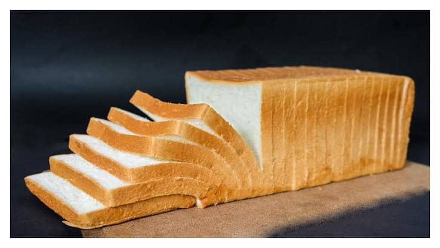

Freshly Baked
Our products are prepared fresh to provide quality and great taste.
D'ose Crust Bakery
Freshly Baked Goodness

Welcome to D'ose Crust Bakery, where every loaf is baked with quality ingredients, care, and a passion for great taste.
Explore Our ProductsWe provide freshly baked bread and delicious bakery products prepared to give our customers quality, freshness, and great taste. From family loaves to coconut bread, buns, milk bread, mini loaves, and soft bite bread, there is something for everyone.
D'ose Crust Bakery is focused on producing fresh, enjoyable bread for individuals, families, retailers, and everyday customers in Abuja. Our goal is to make dependable bakery products that are easy to discover, order, and enjoy.
Our products are prepared fresh to provide quality and great taste.
We use carefully selected ingredients in the production of our bakery products.
Our variety of bread products provides options for individuals and families.
Contact us today to learn more about our products or make an inquiry.
Contact Us